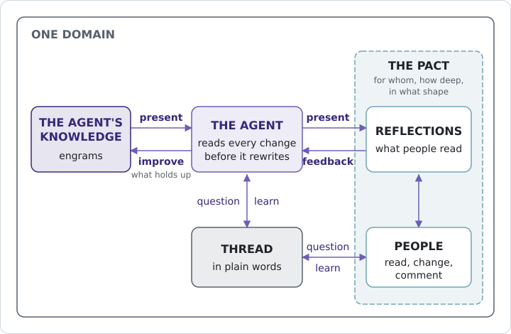
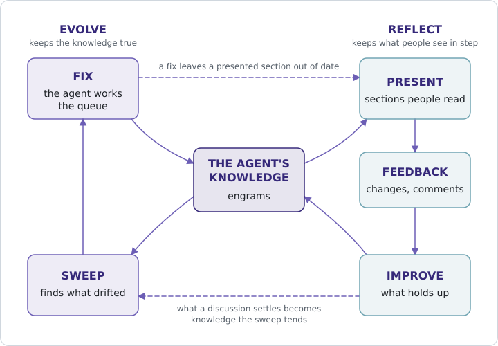

12 Reflection
Reflection is the place where people and the agent meet on a domain, and this chapter walks you through it. The agent writes its engrams for itself, organized so it can store, find and pick up what it learned, and nothing in them is phrased for you. Since people need what’s in there too, the agent presents it in documents for people, at their level and in a shape they can use, and what people change or say about those documents flows back into its engrams.
12.1 Why not read the engrams
An expert who knows a topic doesn’t hand you their notebook. They explain it at your level, leave out what you don’t need and pick the order that makes sense to you. Engrams are the notebook: dense, cross-linked, full of observations written for the next session’s search, and a person reading them is reading somebody else’s shorthand.
You can still open the engrams in Fluid, as a look into the agent’s mind (a bit like a session on the couch, or a debugger): you go there once in a while to inspect what it learned and fix it. With Reflection, Fluid gets a second mode beside the engrams. A domain with Reflection switched on opens in that mode, and people spend their day there.
12.2 Asking a colleague to present
Think of the colleague who knows a topic best: you ask them to give the team a presentation on it. Once it’s up on the screen the room works with it, and the feedback improves it for everyone, presenter included: somebody spots a gap, somebody else knew a detail the presenter didn’t, two people find out they meant different things by one word.
Reflection does that for a domain: switch it on and the agent presents what it knows as reflections, documents in a folder tree, as many and as deep as the domain agreed. Each one is made of sections (a heading and its text), and every section records which engrams it was built from, so when one of them changes the agent knows which sections to look at again.
Reflection is off on every domain until its owner or an instance admin switches it on. In Fluid that’s one select: pick Domain settings in the More actions menu on the domain page, set reflection to on in Domain policies and confirm with Turn on the Reflection. Or ask an agent that works as the owner or an admin to switch it on for you, and your local agent counts as one. The switch writes a first pact, and from then on the domain opens on its Reflection. For a team domain you do this at the team server, since its Reflection lives there (the club below goes through it).
12.3 The pact
Before anybody presents, the room agrees on how. Every domain with a Reflection has one pact, a file called PACT.md, in four parts: who the reflections are for, how much detail they carry, how they present it and how the tree is structured. The MANIFEST tells the agent what the domain holds, the pact tells everyone how to talk about it. Curators edit it, and everybody else who works on the reflections reads it. A change to the pact lands in the agent’s queue like any other work, and the agent reshapes the reflections to match.
Most of the arguing is about the level of detail. The Hitchhiker’s Guide had a pact too: Ford Prefect’s fifteen years of field research on Earth went into the entry as two words, Mostly harmless. That’s fine for a guide to the galaxy and wrong for a book club, so anyone who works on the reflections can argue with it in a comment, and a curator changes it when the argument wins.
The presentation part covers the shape of a page: the agent picks a diagram, a table or a callout where the content has that shape (messages between two parties, three options side by side, a step you can’t undo) and writes prose everywhere else, the way a skill Crystalline ships teaches it. Where the pact says otherwise, the pact wins (a pact that says no diagrams gets none), and Chapter 13 shows what a page can hold.
12.4 Present, test, improve
The agent presents, and people read what it wrote, change it and comment on a passage. A person’s change shows up at once as ordinary text (no badge, no approval step), and ticking a box in a task list doesn’t count as one. In the background Crystalline notes what changed since the agent last presented that section, and the next time the agent works the queue it reads a person’s change to a section before it rewrites that section. If a change looks wrong or doesn’t fit what it knows, the agent opens a thread on the passage and asks. It does the same with two engrams that disagree (Chapter 11) and asks you; here the doubt is about a person’s change, and that person is right there on the page.
Either the agent knew something the person didn’t, or the person turns out to be right and the agent puts the correction into its engrams. A change ends one of three ways: the agent takes it in and presents the section again, it stays as the person’s text or it gets talked through in the thread. The agent writes plain words there and never links an engram, since many of the people in a thread can’t open one.
A comment can say what it wants with a label at its start: praise, nitpick, suggestion, issue, todo, question, thought, chore or note, optionally marked blocking, non-blocking or if-minor. The agent labels every comment it writes; for people a label is optional, and only a blocking one shows red. Agents answer blocking threads first. A thread belongs to whoever opened it: the agent answers a person’s thread and leaves it open for that person to resolve. It may close its own threads, or a person’s once the person has written back.
When the agent’s own knowledge moves (a correction, a retirement, something new from a session), the sections built from it are out of date and the agent brings the change into the reflections. Something new that no section covers yet gets a new section or a reflection of its own.

12.5 Somebody has to come by
Crystalline has no language model of its own, so it can’t write a word of a page. What it does is notice what’s due and keep a list, the reflect queue: a person’s change to weigh, a comment to answer, an engram that moved under its sections, a new engram no section covers yet, a pact change the pages haven’t caught up with, a file a page links that isn’t there. The writing is the agent’s job (Figure 12.1). If no agent comes by, the question Gaff asked last week sits unanswered in its thread and the Destiny page keeps naming last month’s pick.
In an ordinary session, an agent whose user curates the domain hears about open items the way it hears about the sweep, and works them when you say yes:
Agent: Before we start: club's Reflection has three open items.
Gaff asked on the Dungeon Crawler Carl page whether book
five is out in paperback, and two sections still name last
month's pick. Shall I work them first?
You: Go ahead.For the weeks when nobody opens a session, a team can schedule a daily agent run on its server.
12.6 The club
Dallas runs the book club, and its engrams live in club, shared through the club’s repository and served by the club’s server, which you look after as its admin. Members keep asking Dallas the same things (which Star Trek volume is next, when the club gets to Dune), so he asks you to switch Reflection on, with a pact he has in mind. The switch belongs at the domain’s home, and your laptop has no public address to be one, so switching on there is refused. You ask an agent that works on the club’s server itself (the Domain policies section in the domain’s settings in the server’s Fluid does it too):
You: Switch on Reflection for club. Dallas wants the pact like
this: for members, no spoilers past the first chapter,
a table for the reading order, one page per series.
Agent: Switched on at the club's server, so club's Reflection
lives there, backed up to its own branch of the club's
repository. PACT.md says: for club members, spoiler-free
past the first chapter, the reading order as a table, one
reflection per series. Shall I present what I know?
You: Go ahead.
Agent: Six series pages: Hitchhiker's, Dune, Dungeon Crawler Carl
and the Star Trek series the club reads (The Next
Generation, Deep Space Nine, Destiny). Each says what the
club read, what's next and what members thought, without
the endings.Lambert follows the club on her phone and has no wish to read engrams, so on her account you set the knowledge level to none and the Reflection level to contributor. She can edit every page of the club’s Reflection.
She’s on the bus home with the Dune page open on her phone (the club’s Fluid) when she changes March to May in the line about when the club reads Dune.
That night the club’s scheduled agent run works the queue and reads her change first. It contradicts the agent’s engrams: the club picked March in January, after checking that the paperback was out by then. So it opens a thread on the passage:
Thread on "the club reads Dune in May"
Agent: question: This said March. The club picked March in
January because the paperback was out by then. What
moved it?
Lambert: The reprint slipped. Capsule Corp Books says April now,
and nobody wants the hardback. I wasn't there in January,
so I didn't know March was about the paperback.
Agent: note: Then May holds. I've changed what I know about the
club's list and the reprint, and presented the section
again.
Resolved: taken in, Dune moves to May because the
paperback reprint slipped to April.The agent opened that thread, so it may resolve it. With the reprint date in the engrams and Dune out of March, the club needs another pick, and at the next meeting it chooses the second volume of the Destiny trilogy, which Kane’s agent captures in club. On a later run the agent sees that the next-up section of the Destiny page, built from the club’s list, is out of date and puts the new pick in without anybody touching the page.
12.7 Files, sources and search
Pictures and other files on a page belong to the Reflection and sit in a folder of their own, linked relative to the page (Chapter 13 shows how one sits on a page). An engram’s attachment can’t be embedded in a page: copy the file into the Reflection’s folder and link the copy. A reader sees the files, a contributor adds new ones and a curator replaces, moves and removes them, and the queue tells the agent about a file a page links that isn’t there and about a file no page links.
One page can also sum up several domains, built from their engrams, and the queue watches those sources like the domain’s own. People see only the sources in domains they may open, and everybody else sees a count. A source in a domain this server doesn’t have reads as unavailable, never as missing, so no agent drops it by mistake.
You find a passage with the search on the Reflection’s front page in Fluid, and your agent searches the same way: by words and by meaning, section by section. Engram search never returns a page. A page also prints as a document, with a title block and its open threads as numbered notes at the end (Print view in its More actions menu); Chapter 13 has more.
12.8 Who sees what
With Reflection, access gets two axes, and you set them separately. One is the level on the engrams that Chapter 15 and Chapter 18 describe: viewer or editor (plus manager on a private domain and admin on the instance), and one more value, none, for somebody who sees no engrams at all. The other is the Reflection level, and there are two. A reader reads the reflections and comments (opening, answering, resolving and reopening threads). A contributor also edits their text and creates, moves and deletes reflections. Curating isn’t a level anybody sets: everyone from engram editor up curates (Fluid calls them curators), and their agents curate with their rights. A curator also writes sections from the engrams, settles what people changed and edits the pact. A viewer of the engrams is a reader by default, and a Reflection level set on top only ever raises that (to contributor, say), so nobody who can read the engrams is kept out of their Reflection.
On a shared domain both levels sit on the person’s account, set by an admin for every shared domain on the instance, and on a private domain they sit side by side on the membership. Anonymous web visitors get in only where the instance lets anonymous requests in, and there they read the reflections of the domains an anonymous visitor can read, the way they read those domains’ engrams, without ever commenting. On your own machine without accounts none of this applies and everything is allowed.
In Fluid the Engrams mode appears from knowledge viewer up and the Reflection mode from reader up, which is all Lambert sees.
12.9 Why the Reflection lives in one place
Every laptop on a team holds a copy of the engrams, and sharing keeps the copies in step. Pages can’t work that way. People edit a page together and argue in its threads, and that only works among the people one instance knows: two copies would be two rooms with two conversations about one page, and each laptop’s agent would present the same engrams its own way until the pages drift apart. Lambert doesn’t read engrams, so a thread she writes in mustn’t travel with them; as long as Reflection stays on, sharing changes sends only engrams to the repository. The levels the team agreed on live in the server’s accounts, while on your laptop you’re the owner and may do anything, so a copy there would quietly get around them.
So a team domain’s Reflection lives on its home, the team server, which backs the pages up to their own branch of the repository. With one writer, that branch never needs a merge (a branch per laptop would show private threads to everybody with access to the repository). A laptop’s copy of a team domain holds no pages, and a domain that lives only on your machine keeps its pages where it is, as ordinary files.
Your laptop’s agent reaches the pages once the laptop connects to the server (Section 15.9): the server’s club then answers in place of the laptop’s own copy, and you open the pages in the server’s Fluid. Without that connection, the laptop’s copy answers where the Reflection lives:
You: What's next on the club's Dune page?
Agent: The club's Reflection lives at https://club.example.com,
and this laptop isn't connected to that server right now,
so my copy of club has no pages. Connect to the club's
server and I'll read the page there, or open it in the
club's Fluid.12.10 Two lifecycles
A domain with Reflection runs two lifecycles around the same engrams (Figure 12.2). On the left is evolve, the sweep from Chapter 10, with which the agent keeps its own knowledge true. Reflect keeps what people see in step with the engrams and brings back what people know. The two cross twice. A fix from the sweep (a retirement, a corrected date) leaves the sections built from the old engram out of date, so they land in the reflect queue. And what a thread settles lands in the engrams, where the sweep tends it from then on like everything else.

You switch Reflection on with reflection: on in the MANIFEST (it’s off until you do), and the switch writes a starter PACT.md with four headings: ## Audience, ## Level of detail, ## Presentation and ## Structure. On a domain with a GitHub origin the same change writes reflection_home too, and its value is this instance’s service.public_url. Without a public URL the switch refuses and tells you to switch Reflection on at the team server. On any other instance the Reflection tools refuse and name where the domain’s Reflection lives. Without a GitHub origin there’s no reflection_home, because the Reflection simply lives where the domain does. The files all sit under reflections/: PACT.md at its root, the reflections as markdown files in whatever folders the pact describes (each ## heading a section), the threads of a reflection in a .threads.md file beside it, the files pages link under reflections/assets/ and a hidden baseline of what was last presented under reflections/.reflected/. Moving a reflection takes its threads and baseline along and rewrites relative links to it. While the switch is on, the folder stays out of engram sync, the engram index, evolve, search_engrams and sharing; the engram write tools refuse any path under it (write_engram, edit_engram, move_engram, delete_engram), and reflections are searched in an index of their own, by words and by meaning, through read_reflection with a query. Switching on refuses while engrams live under reflections/ and names them, so you move them first; it also refuses on a virtual domain and while the team’s copy still holds files under reflections/. Switching off is always allowed, but don’t share changes while it’s off: the folder is engram content then, and sharing would offer its pages and threads.
The agent gets four tools, the same list for every client (a read-only instance hides reflect, write_reflection and discuss), and each of them refuses on a domain with the switch off. reflect hands over the queue ranked, recomputes it on each call and puts the oldest item first, with its age. In the queue, feedback means a person added, changed or removed a section since the agent last presented it, and the item carries the difference, the section’s source engrams and who changed it. update means the knowledge behind a section moved or the page needs work, for example: a source engram changed, was retired or is gone, an engram has no section yet, a reflection strayed from the pact, a pact change isn’t applied yet or a file a page links is missing or unused. And review items are open threads waiting for the agent, with the label of the opening comment and whether it blocks. Within one section a feedback item always comes before an update item, and a blocking thread before the others. read_reflection without a path lists the tree. Give it a path and you get that reflection with its sources and open threads; give it a query and it searches. write_reflection creates, changes, moves and deletes reflections and edits the pact (the pact only for curators). It also settles a person’s change as kept or taken_in. A section written with its sources is presented from the engrams, and one written without is an ordinary edit. discuss opens a thread on a section or a quoted passage, answers, resolves with a short outcome and reopens; a resolved thread’s history is never rewritten. An agent’s resolve of a person’s thread right after its own answer is refused, and in Fluid the person who opened the thread sees “Answered, waiting for you”. The session-start briefing names a domain’s Reflection when it has open items, and the Stop hook and the line after a write nudge the agent as they do for the sweep, but only an agent whose user curates that Reflection.
A source from another domain is written as its address, for example crystalline://<domain>/<permalink>, in the section’s sources. A source in a domain that isn’t on this server, or one a connected server serves, reads unavailable. Rename a domain with crystalline domain rename, which renames it in every page’s sources as well; a name changed by hand in the MANIFEST leaves those sources unavailable. A file is linked relative to the page, as in  from a page at the top of reflections/.
A read-only domain (Section 23.7) freezes its Reflection too: people and agents can still read it, but every edit, thread, settling and pact change is refused, and a queue over every domain leaves it out, as the sweep does.
The Reflection level (set by an admin on the account, or on a private domain by its owner or a manager) is default (Fluid shows “as knowledge”), reader or contributor, and it only ever raises access: the effective level is the higher of the default and the setting. Curating follows from knowledge editor, manager, owner or instance admin and is never set on its own. Without an explicit level, knowledge viewer gives reader and knowledge none gives nothing. An account whose write list leaves a domain out at most reads and comments there. crystalline users add lambert --role none --reflection contributor creates Lambert’s account, crystalline users reflection lambert reader changes its level, and crystalline domain members committee add gaff --level none --reflection reader lets a member of a private domain read its Reflection only. A caller with knowledge none gets nothing from any engram tool over MCP or REST and finds its domains through the Reflection domain list. On an instance that lets anonymous requests in, an anonymous web visitor reads the reflections of the domains it may read, as it reads their engrams, but never comments; otherwise it gets no Reflection. An anonymous agent over HTTP on an instance with auth.mcp off is the open tier, and it curates the Reflection the way it may write engrams.
On the home instance a job commits the whole reflections/ folder to the branch crystalline/reflections of the domain’s GitHub origin with the instance’s own token; the engram branch never carries it. To restore from that branch, stop the daemon, clone the branch, copy its reflections/ folder over the domain’s, start the daemon and run crystalline reindex. A domain export carries the Reflection, and an import leaves it out. To move the home, copy the reflections/ folder to the new instance, switch Reflection off and on there in one go and share the MANIFEST change at once. On a shared Postgres database only the instance that hosts the domain serves its Reflection, and crystalline serve --take-over moves it. The scheduled run is a documented setup, a headless agent on the home instance working the reflect queue, for example claude -p with --allowedTools "mcp__crystalline" from cron, with an MCP token of a curating account where agents sign in; the installer doesn’t set it up.
In Fluid’s top bar you switch a domain between Reflection and Engrams, and a domain with Reflection on opens in Reflection mode. It shows the tree of reflections, a search over them and each reflection with live co-editing, comments anchored on selected text with a Label menu and a Blocking only switch, and a jump from a section to its source engrams, hidden from people with knowledge none; curators edit the pact like any reflection. The users screen and the Members section in the domain’s settings set both levels. A review screen per domain lists the open threads first, split into waiting for people and waiting for the agent, grouped by page, and below them the reflect queue, to look at the way Maintenance shows the sweep.
Engrams are the agent’s own knowledge, and opening them in Fluid is the exception, for inspecting and correcting. Reflection is where people and agents meet on a domain: the agent presents what it knows as reflections, in the shape the domain’s pact agrees on, and everyone puts them to the test. People change and comment, the agent reads a person’s change before rewriting a section and asks in a thread when something doesn’t fit, and since Crystalline has no model to write with, an agent has to come by, in sessions and on a schedule, to answer and bring the engrams’ changes in. Access has two axes, so a contributor with knowledge none works on reflections without seeing an engram, while everyone from engram editor up curates, and a team domain’s Reflection lives only on its team server. Evolve keeps the knowledge true, reflect keeps what people see in step with it and each feeds the other.